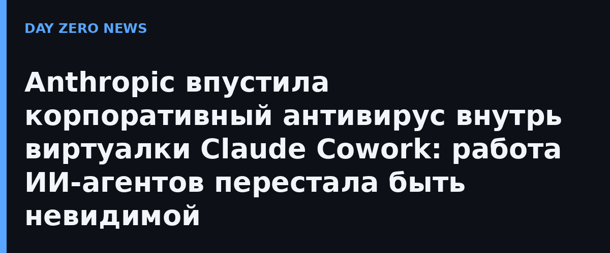

Когда Claude Cowork работает на компьютере сотрудника, он выполняет shell-команды и код в изолированной виртуальной машине. И это была слепая зона: корпоративный датчик EDR (система обнаружения вторжений на конечных точках), который стоит на машине, внутрь этой виртуалки заглянуть не может. Агент может сколько угодно писать скрипты и таскать файлы — защитный софт компании этого просто не видит.
Компания официально добавила в Claude Desktop опциональную бету: теперь собственный EDR-сенсор можно установить внутрь той самой виртуальной машины, в которой Cowork на Windows и macOS запускает код. Сенсор видит активность и содержимое внутри VM — промпты, файлы и ответы Claude — и отправляет данные в корпоративную систему защиты. То есть решения агента теперь попадают в тот же контур мониторинга, что и действия обычного сотрудника.
Поворот показательный: буквально на прошлой неделе WorkOS подтвердила, что её внутреннюю систему взломал автономный ИИ-агент ARTEX, а исследователи требуют международного надзорного органа для таких агентов. Пока агент работал в «слепой» VM, ни одна защита его шаги не фиксировала. Anthropic первой из больших лабораторий признала: изоляция песочницы не заменяет наблюдаемость, и дала компаниям инструмент подглядывать за собственными агентами.
У медали есть вторая сторона: сенсор видит содержимое промптов и файлов, а значит личные или чувствительные сессии пользователя теперь видны корпоративной защите. Anthropic подчёркивает, что установка опциональна и рассчитана на корпоративных администраторов, — но сам факт, что «что я набрал агенту» может стать предметом анализа SOC, меняет приватность работы с ИИ-ассистентом на рабочем месте.